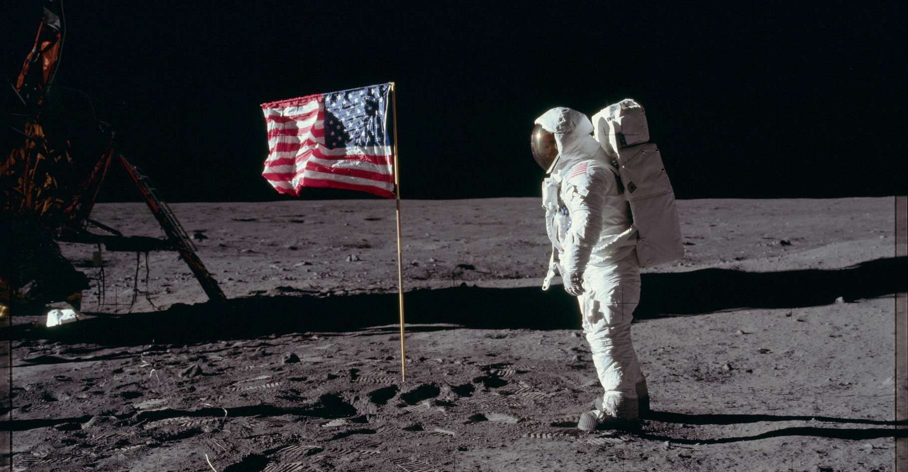

Section Espace
Vers Mars et au-delà
Cette page contient: 12 chapitres

Chapitre 1 : Le Nouveau Défi
L’humanité a toujours regardé les étoiles avec émerveillement, et après la conquête de la Lune, Mars devint la nouvelle frontière. La planète rouge, avec ses mystérieux canyons, ses volcans gigantesques et ses plaines arides, a longtemps fasciné les scientifiques et les rêveurs. Dès les années 1960, les premières sondes spatiales furent envoyées pour survoler et photographier Mars, ouvrant la voie à des décennies d'exploration robotique et de préparation pour un jour y envoyer des êtres humains.
Chapitre 2 : Les Premières Missions Robotiques
Les premières missions vers Mars étaient des tentatives pionnières pour comprendre la planète à distance. Mariner 4, lancée par la NASA en 1964, fut la première sonde à survoler Mars et à envoyer des images détaillées de sa surface. Ce survol révéla une planète criblée de cratères, semblable à la Lune. Les missions Viking 1 et 2, en 1976, furent les premières à atterrir sur Mars. Elles menèrent des expériences biologiques pour détecter la vie et fournirent des images détaillées de la surface martienne.
Chapitre 3 : Les Rover Martiens
Au début du XXIe siècle, les rovers Spirit et Opportunity, lancés en 2003, commencèrent une nouvelle ère d'exploration martienne. Équipés de nombreux instruments scientifiques, ils parcoururent des kilomètres sur la surface de Mars, analysant des roches et des sols, et envoyant des données cruciales sur l’histoire géologique de la planète. Opportunity, en particulier, dépassa de loin sa mission initiale de 90 jours en explorant Mars pendant près de 15 ans.
Chapitre 4 : Curiosity et la Recherche de la Vie
Lancé en 2011, le rover Curiosity marqua une avancée significative dans l'exploration martienne. Son principal objectif était de déterminer si Mars avait jamais offert des conditions favorables à la vie. Curiosity découvrit des preuves de l'existence passée d'eau liquide, de molécules organiques et de conditions environnementales qui auraient pu soutenir la vie microbienne. Cette mission renforça l’intérêt pour l’envoi d’une mission habitée.
Chapitre 5 : Les Défis d'une Mission Humaine vers Mars
Envoyer des humains sur Mars présente des défis technologiques et physiologiques considérables. Les voyages vers Mars impliquent une durée de plusieurs mois, exposant les astronautes à des niveaux élevés de radiation cosmique et à l’apesanteur prolongée, qui affecte la santé osseuse et musculaire. Les solutions à ces problèmes incluent le développement de systèmes de protection contre les radiations, des habitats confortables et autonomes, ainsi que des moyens de transport rapide et fiable.
Chapitre 6 : La Collaboration Internationale
La réalisation d'une mission habitée vers Mars nécessite une coopération internationale. Des agences spatiales telles que la NASA, l'ESA (Agence spatiale européenne), Roscosmos (Russie), et la CNSA (Administration spatiale nationale de Chine) ont toutes exprimé leur intérêt pour une mission martienne. La collaboration permettrait de partager les coûts astronomiques et de rassembler les meilleures technologies et expertises mondiales pour surmonter les défis inhérents à une telle mission.
Chapitre 7 : Mars 2020 et Perseverance
Lancée en 2020, la mission Mars 2020, avec le rover Perseverance, est une nouvelle étape cruciale. Perseverance est équipé pour rechercher des signes de vie passée et collecter des échantillons de sol et de roche pour un retour futur sur Terre. Il transporte également l’hélicoptère Ingenuity, qui a réalisé le premier vol contrôlé sur une autre planète, ouvrant de nouvelles possibilités pour l’exploration aérienne de Mars.
Chapitre 8 : Elon Musk et SpaceX
Elon Musk et sa société SpaceX ont dynamisé l’intérêt pour l’exploration de Mars avec des plans ambitieux pour établir une colonie humaine permanente sur la planète rouge. Le vaisseau spatial Starship, actuellement en développement, est conçu pour transporter de grandes quantités de fret et des centaines de personnes vers Mars. Musk envisage des missions de colonisation dès les années 2030, avec l’objectif de rendre l’humanité multi-planétaire.
Chapitre 9 : La Science Fiction Devient Réalité
L'exploration de Mars a longtemps été le thème de nombreux récits de science-fiction. Des œuvres comme "The Martian" de Andy Weir et "Red Mars" de Kim Stanley Robinson ont popularisé l'idée de la colonisation de Mars et ont inspiré le public et les scientifiques. Aujourd'hui, ce qui était autrefois fiction devient de plus en plus réalisable grâce aux avancées technologiques et à la détermination de visionnaires et de scientifiques.
Chapitre 10 : Les Missions Habitées en Préparation
Des missions habitées vers Mars sont en préparation, avec des objectifs de plus en plus concrets. La NASA travaille sur le programme Artemis, visant à retourner sur la Lune pour établir une base durable qui servira de tremplin pour des missions martiennes. Parallèlement, des tests de longue durée en conditions simulées sur Terre et à bord de la Station spatiale internationale (ISS) continuent de préparer les astronautes aux rigueurs du voyage interplanétaire.
Chapitre 11 : La Vie sur Mars
Une fois sur Mars, les astronautes devront surmonter des défis quotidiens pour survivre et prospérer. Ils devront trouver des moyens de produire de l'oxygène, de l'eau et de la nourriture, de protéger les habitats des radiations et de maintenir leur santé mentale dans un environnement isolé et hostile. Des technologies comme les réacteurs à fission, l’agriculture hydroponique et les habitats gonflables sont en développement pour répondre à ces besoins.
Chapitre 12 : Vers les Lunes de Mars et au-delà
Mars n’est qu’une étape dans l’exploration spatiale. Les lunes de Mars, Phobos et Deimos, offrent également des cibles d’exploration intéressantes. Elles pourraient servir de bases intermédiaires ou de sources de ressources pour les missions martiennes. À plus long terme, les ambitions d'exploration s’étendent aux autres planètes et lunes du système solaire, comme les lunes glacées de Jupiter et de Saturne, qui pourraient abriter des océans souterrains et peut-être même la vie.
Conclusion : L'Humanité dans l'Espace
L'exploration de Mars et au-delà représente l'ultime aventure humaine. Elle pousse nos capacités technologiques, renforce notre compréhension scientifique et nourrit notre imagination collective. En regardant vers Mars et au-delà, nous affirmons notre désir de découvrir, d’explorer et de comprendre l’univers. L'héritage des missions lunaires, combiné à l'esprit d'innovation moderne, promet de nous conduire vers de nouvelles frontières, transformant notre présence dans le cosmos et notre compréhension de la vie elle-même.